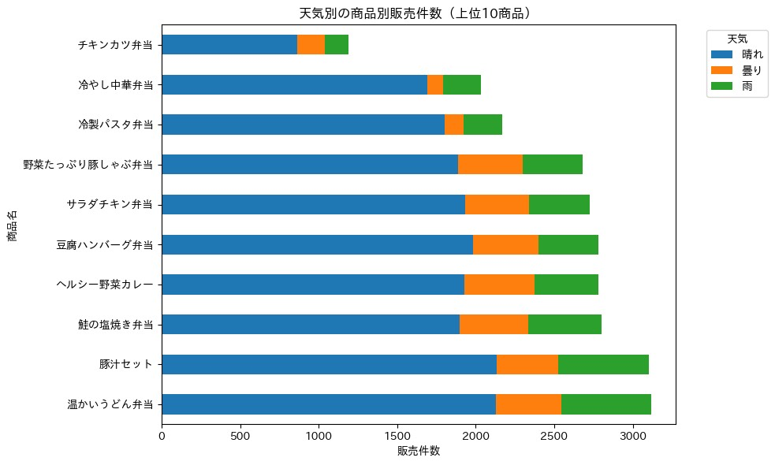

Python（VS Code）で行ったデータ分析をまとめたサイト
POSデータ・商品データ・天気データを結合し、「気温」「降水量」「天気区分」が売上にどれほど影響するかを分析しました。
# 天気 × 売上 相関分析スクリプト
import pandas as pd
import matplotlib.pyplot as plt
df = pd.read_csv("merged_data.csv")
df["weather_code"] = df["weather"].map({"晴れ":0, "曇り":0.5, "雨":1})
corr = df[["amount", "temperature", "rainfall", "weather_code"]].corr()
print(corr)
plt.scatter(df["temperature"], df["amount"])
plt.xlabel("Temperature")
plt.ylabel("Sales Amount")
plt.title("Temperature vs Sales")
plt.show()下の図は、気温と売上の散布図の例です。（VS Code の Python 実行結果を貼り付け）
・気温が高いほど売上が上がる傾向が見られた商品が多かった。
・雨の日は来店数が減少し、売上にも影響が出ていた。
・気温帯ごとに商品カテゴリ別の特徴が見えやすかった。
（パワポ資料はこちら）